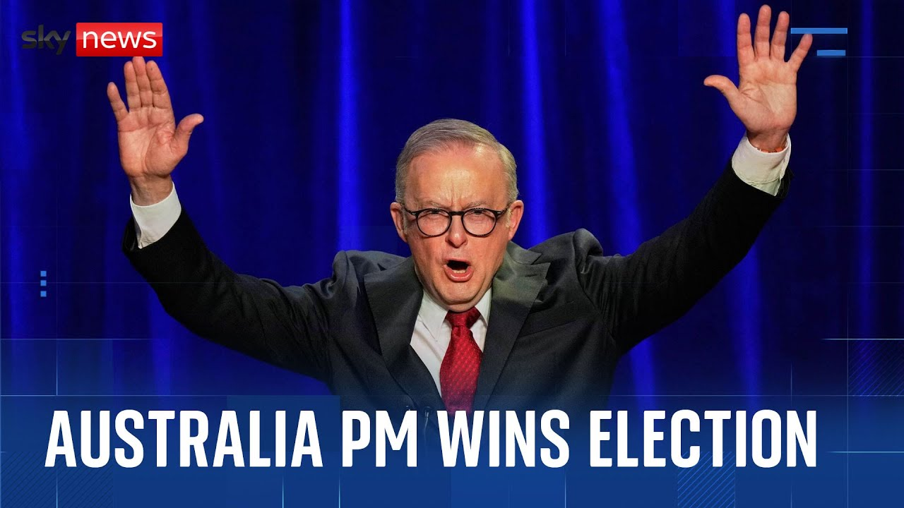

来B站一起耍【Global每日英语简报】
【在全球不确定性时期，这是一次选择连续性的投票。安东尼·阿尔巴尼斯赢得连任，成为21年来首位连续担任澳大利亚总理的人。澳大利亚人选择工党作为他们的政府。我们不需要乞求、借用或模仿其他地方。我们不寻求海外的灵感。选民在生活成本危机、通货膨胀和能源政策等关键问题以及担心特朗普关税影响的背景下前往投票。生活成本显然是当前每个人都在考虑的重要问题。气候行动主义在我的清单上名列前茅。对我来说，拥有远见并考虑年轻澳大利亚人的未来很重要。不久后，阿尔巴尼斯的中左翼工党的保守派对手承认失败。彼得·达顿在担任议员24年后失去了自己的席位。我们在这次竞选中表现不够好。今晚这一点很明显，我对此负全部责任。早些时候，我打电话给总理祝贺他今晚的成功。他曾被称为“狡猾的达顿”，这是对埃隆·马斯克政府效率部门首字母缩写的戏仿，因为他最初承诺削减超过五分之一的公共部门职位。这不是第一次受到美国总统言行影响的选举。前英国央行行长马克·卡尼当选为加拿大总理。他强烈反对特朗普的关税和将加拿大变成美国第51个州的威胁，赢得了公众支持。在澳大利亚，安东尼·阿尔巴尼斯承诺明天开始艰苦的工作，但专家们没有等到那时才讨论这对他的国家可能意味着什么。天空新闻，艾玛·伯奇利。】
Summary: It was a vote for continuity at a time of global uncertainty.
摘要： 这是一次在全球不确定性时期选择连续性的投票。

⏱️ Estimated Reading Time: 3 min
It was a vote for continuity at a time of global uncertainty.
这是一次在全球不确定性时期选择连续性的投票。
Anthony Albani clinching a second consecutive three-year term as Australian Prime Minister, the first to do so in 21 years.
安东尼·阿尔巴尼斯赢得连任，成为21年来首位连续担任澳大利亚总理的人。
My fellow Australians, Australians have chosen the Australian Labor Party as their government.
我的澳大利亚同胞们，澳大利亚人选择工党作为他们的政府。
We do not need to beg or borrow or copy from anywhere else.
我们不需要乞求、借用或模仿其他地方。
We do not seek our inspiration overseas.
我们不寻求海外的灵感。
Voters headed to the polls amidst a cost of living crisis with inflation and energy policy key issues as well as concern about the impact of Donald Trump's tariffs.
选民在生活成本危机、通货膨胀和能源政策等关键问题以及担心特朗普关税影响的背景下前往投票。
The cost of living is obviously a huge thing that's on everyone's mind at the moment.
生活成本显然是当前每个人都在考虑的重要问题。
Climate activism um would be yeah on top of my list.
气候行动主义在我的清单上名列前茅。
For me it's uh having vision and thinking about the future of our younger Australians.
对我来说，拥有远见并考虑年轻澳大利亚人的未来很重要。
It wasn't long before the Conservative rival to Albanese's centerleft Labor Party had conceded defeat.
不久后，阿尔巴尼斯的中左翼工党的保守派对手承认失败。
Peter Dutton losing his own parliamentary seat in the process after 24 years in the role.
彼得·达顿在担任议员24年后失去了自己的席位。
We didn't do well enough during this campaign.
我们在这次竞选中表现不够好。
That much is obvious tonight and I accept full responsibility for that.
今晚这一点很明显，我对此负全部责任。
Earlier on, I called the prime minister to congratulate him on his success tonight.
早些时候，我打电话给总理祝贺他今晚的成功。
He'd been branded dodgy Dutton, a play on the acronym for Elon Musk's Department of Government Efficiency after initially pledging to ax more than one in five public sector jobs.
他曾被称为“狡猾的达顿”，这是对埃隆·马斯克政府效率部门首字母缩写的戏仿，因为他最初承诺削减超过五分之一的公共部门职位。
And this was not the first election to be impacted by the US president's words and actions.
这不是第一次受到美国总统言行影响的选举。
[Applause] The former governor of the Bank of England, Mark Carney, voted in as Canada's prime minister.
前英国央行行长马克·卡尼当选为加拿大总理。
His strong stance against Trump's tariffs and threats to turn the country into the 51st US state, winning him public support.
他强烈反对特朗普的关税和将加拿大变成美国第51个州的威胁，赢得了公众支持。
In Australia, Anthony Albanzi pledged to begin the hard work tomorrow, but the experts weren't waiting until then to discuss exactly what that might mean for the country he'll lead once more.
在澳大利亚，安东尼·阿尔巴尼斯承诺明天开始艰苦的工作，但专家们没有等到那时才讨论这对他的国家可能意味着什么。
Emma Burchley, Sky News.
天空新闻，艾玛·伯奇利。